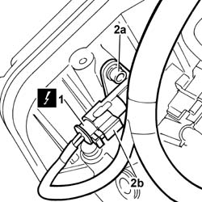
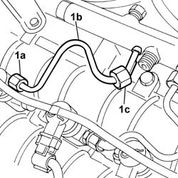
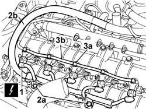
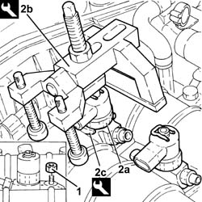
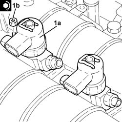
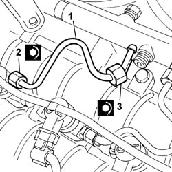

1060F10 INJECTORS - R.R.
- Path
- Procedures > 10 ENGINE > 1060 DIESEL FUEL INJECTION SYSTEM > 1060F INJECTORS AND LINES > 1060F10 INJECTORS - R.R.
- Kind
- repair procedure (removal / refitting; the operation number is the code)
- Applies to
- engines: 2.4 JTD 20V; all production periods
- Interactive page
- https://sloeber94.github.io/elrnDB-lThss/en/#/850528
Applies to: engines: 2.4 JTD 20V; all production periods
 Removing
Removing
 Refitting
RefittingSee in Op. 7040D50 ENGINE COMPARTMENT UPPER SOUND INSULATION SHIELD - R.R.
See in Op. 1016A10 SOUND-PROOFING COVER - R.R.
See in Op. 1048B44 RIGID air supply PIPE from heat exchanger to intake manifold - R.R.
- Disconnect the negative battery terminal.
1. Disconnect the electrical connection for the timing sensor.
 | Description | Connector |
|---|---|---|
1 | Timing sensor | K047 |
2. Undo the fixing bolt (2a) and remove the sensor (2b) from the housing in the camshaft housing.

Applies to: engines: 2.4 JTD 20V; all production periods
1. Undo the connectors (1a) and (1b) and remove the pipes from the fuel manifold to the injectors (1c).

Applies to: engines: 2.4 JTD 20V; all production periods
1. Disconnect the electrical connections from the injectors.
| Description | Connector |
|---|---|---|
1 | Injector | N070A |
| Description | Connector |
|---|---|---|
1 | Injector | N070E |
| Description | Connector |
|---|---|---|
1 | Injector | N070D |
| Description | Connector |
|---|---|---|
1 | Injector | N070C |
| Description | Connector |
|---|---|---|
1 | Injector | N070B |
2. Undo the fixing bolts (2a) and release the injection wiring (2b) moving it away from the work area.
3. Manually push the clips (3a) and disconnect the pipe from the injectors to the fuel recovery manifold (3b), injector side, and move it sideways.

Applies to: engines: 2.4 JTD 20V; all production periods
1. Undo the injector bracket retaining nuts.
2. Remove the injectors (2a) complete with brackets using the tools (2b) and (2c).
 | Description | Code | Function |
|---|---|---|---|
2b | Extractor | 1.870.739.000 | Removing injectors |
| Description | Code | Function |
|---|---|---|---|
2b | Extractor | 1.870.897.300 | Removing injectors |

Applies to: engines: 2.4 JTD 20V; all production periods
Refitting
Removing1. Fit the injectors (1a) in their seats complete with brackets and tighten the nuts (1b) to the recommended torque.
 | Value - daNm | Fastening | Component | Ø |
|---|---|---|---|---|
1b | 3 | Nut | INJECTORS(DIESEL) | M8X1,25 |

Applies to: engines: 2.4 JTD 20V; all production periods
1. Fit the new pipes from the fuel manifold to the injectors and secure them without tightening the connectors.
2. Tighten the connectors for the pipes from the fuel manifold to the injector side injectors to the recommended torque using an ordinary spanner.
| Value - daNm | Fastening | Component | Ø |
|---|---|---|---|---|
2 | (injector side) 2 | Connectors | INJECTOR FUEL MANIFOLD PIPE | M12X1.5 |
3. Tighten the connectors for the pipes from the fuel manifold to the fuel manifold side injectors to the recommended torque using an ordinary spanner.
| Value - daNm | Fastening | Component | Ø |
|---|---|---|---|---|
3 | (manifold side) 2 | Connectors | PIPE FUEL MANIFOLD TO INJECTORS | M12X1.5 |

Applies to: engines: 2.4 JTD 20V; all production periods
- Connect the pipe from the injectors to the fuel recovery manifold pushing it until the clips are heard clicking.
- Place the electrical wiring in position and tighten the cable duct fixing bolts.
- Connect the electrical connections for the injectors.
| Description | Connector |
|---|---|---|
. | Injector | N070A |
| Description | Connector |
|---|---|---|
. | Injector | N070E |
| Description | Connector |
|---|---|---|
. | Injector | N070D |
| Description | Connector |
|---|---|---|
. | Injector | N070C |
| Description | Connector |
|---|---|---|
. | Injector | N070B |
- Fit the timing sensor and tighten the retaining bolt.
- Connect the electrical connection to the timing sensor.
| Description | Connector |
|---|---|---|
. | Timing sensor | K047 |
- Connect the negative battery terminal.
See in Op. 1048B44 RIGID air supply PIPE from heat exchanger to intake manifold - R.R.
See in Op. 1016A10 SOUND-PROOFING COVER - R.R.
See in Op. 7040D50 ENGINE COMPARTMENT UPPER SOUND INSULATION SHIELD - R.R.